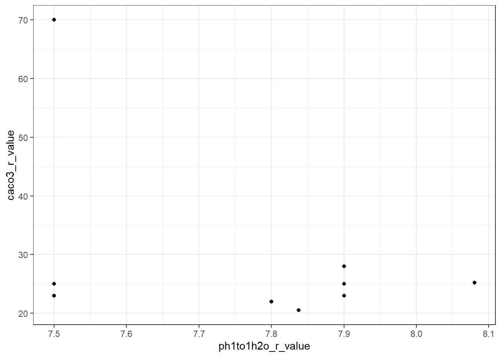

library(tidyverse)
mu <- read_csv("data/mu_weighted_soil_props.csv")
cmp_lookup <- read_csv("data/key_cokey_mukey_complete_cases_include.csv")
cmp_details <- read_csv("data/component_list.csv")
munames <- read_csv("data/target_mapunit_table.csv") %>%
select(mukey, muname, muacres)
# more rows than mu b/c there are multiple cmps
# included in some mus
mu_cmp <- left_join(mu, cmp_lookup, by = "mukey")
# adds munames and muacres
mu_cmp_nm <- left_join(mu_cmp, munames, by = "mukey")
# one row for each component (there can be multiple components
# for an included mukey), now includes munames and component details
mu_detail <- left_join(mu_cmp_nm, cmp_details, by = c("cokey","mukey"))
# for translating MUKEY from gSSURGO to my shortened version
cwalk <- aoi_mu <- read.delim("data/gSSURGO_MN/mukey_new_crosswalk.txt", sep = ",") %>%
select(MUKEY, MUKEY_New, Count)9 Additional Data Preparation
Following the data exploration we did in Chapter 7 and Chapter 8 , we are doing the following additional data preparation on the map-unit aggregated data before running k-means:
- Exclude MUKEYs that are Anthroportic Udorthents , check on pits (gravel/sand), dumps
- For MUKEYs with EC>0 & EC<1, set EC to 0 (see Section 7.8 and Section 8.6.3 )
- For MUKEYs with LEP = 0, set LEP to 0.5 (see Section 7.11 and Section 8.6.4 )
9.1 Anthroportic Udorthents
9.1.1 Identify MUKEYs to exclude
- Exclude
taxsubgrp == Anthroportic Udorthent- This covers some of the pits (see next bullet), and all of the MUNAME containing “dump”. It also covers everything with “landfill” in the MUNAME
- Exclude MUNAMEs that contain “Pit” or “pit”, but keep “pitted”, as below
- This covers pits that are not classified as Anthroportic Udorthents
# look at anything that includes "Anthro" in the subgroup
anthro <- mu_detail %>%
filter(str_detect(taxsubgrp, "Anthro")) %>%
select(muname, taxsubgrp, muacres, mukey, cokey)
anthro # all landfills in our "include" dataset
# are classified as Anthroportic Udorthents
mu_detail %>% filter(str_detect(muname, "landfill")) %>%
select(muname, taxsubgrp, taxgrtgroup, muacres, mukey, cokey)# not all munames that include "pit" (gravel or sand)
# include classification info, some have taxsubgrp
# entered as anthroportic udorthent and some don't
# this means we will also want to exclude based on
# some version of "pit" in the muname, but careful not to exclude # "pitted"
pits <- mu_detail %>%
filter(str_detect(muname, "Pit") |
str_detect(muname, "pit"),
!str_detect(muname, "pitted")) %>%
select(muname, taxsubgrp, taxgrtgroup, muacres, mukey, cokey)
pits# it appears that all munames that include "dump"
# are classified as anthroportic udorthents
dumps <- mu_detail %>%
filter(str_detect(muname, "Dump") |
str_detect(muname, "dump")) %>%
select(muname, taxsubgrp, muacres, mukey, cokey)
dumps# look at the other Udorthents to be sure
# excluding the Anthroportic Udorthents here
# b/c they are already on the cut list
udorthents <- mu_detail %>%
filter(taxgrtgroup == "Udorthents",
!str_detect(taxsubgrp, "Anthroportic")) %>%
#safer to do this because sometimes udorthent is singular, sometimes plural
select(muname, taxsubgrp, taxgrtgroup, muacres, mukey, cokey)
# these all seem fine to keep
udorthents9.1.2 Compile list of MUKEYs to exclude
anthro_mukeys <- anthro %>% pull(mukey)
pit_mukeys <- pits %>%
pull(mukey)
# the "all" list contains duplicates,
# keep only unique mukeys
excl_mukeys_all <- c(anthro_mukeys, pit_mukeys)
excl_mukeys_unique <- unique(excl_mukeys_all)9.1.3 Exclude
mu_no_anthro <- mu %>%
filter(!mukey %in% excl_mukeys_unique)We started with 6912 MUKEYs, after excluding the Anthroportic Udorthents and pits, we have 6873 MUKEYs, a difference of 39 .
9.2 Update EC Values
After reviewing maps of the EC values across the state in Chapter 8 , we decided to set all EC values that were >0 and <1 to 0.
mu_ec_update <- mu_no_anthro %>%
mutate(ec_r_value = case_when(
(ec_r_value > 0 & ec_r_value < 1) ~ 0,
TRUE ~ ec_r_value
))
# how many mukeys were set to zero with the above rule?
ec_set_zero <- mu_no_anthro %>%
filter(ec_r_value > 0, ec_r_value < 1) %>%
pull(mukey) %>%
unique() %>%
length()There were 205 MUKEYs with EC value set to zero using the above rule.
9.3 Update LEP Values
There are a small number of map units, covering a small area, that have LEP=0. Set these to 0.5 (based on the spatial pattern, we suspect these aren’t truly measured 0 values).
mu_lep_update <- mu_ec_update %>%
mutate(lep_r_value = case_when(
lep_r_value == 0 ~ 0.5,
TRUE ~ lep_r_value
))
# how many mukeys were set to 0.5 with the above rule?
lep_update_mukeys <- mu_ec_update %>%
filter(lep_r_value == 0) %>%
pull(mukey) %>%
unique() %>%
length()There were 117 affected by the above rule.
9.4 High carbonates?
In ?sec-clust-full , I noticed some of our MUKEYs have REALLY high carbonates for topsoil (>20% ). Look into these a little more, is it possible these are data entry errors?
The one with 70% carbonates in particular seems goofy. I wonder if this is a calcareous fen? Do we want to include it? Represents ~700 acres across the state. I mapped this and it appears to be mostly in Steele County (SE MN).
Most of the others that have carbonates in the 20-30% range are rims on depressions in till plains or lake plains. So that seems reasonable given the setting.
highcarb <- mu_lep_update %>%
filter(caco3_r_value > 20)
highcarb %>%
ggplot() +
geom_point(aes(x = ph1to1h2o_r_value, y = caco3_r_value)) +
theme_bw()
hc_mukeys <- highcarb %>% pull(mukey)
# clicked through these, to see if any seemed
# like data entry errors
mu_detail %>%
filter(mukey %in% hc_mukeys) %>%
select(mukey, caco3_r_value,
muname, muacres, compname, geomdesc, contains("tax")) # this is the really high one (Marsh)
mu_detail %>% filter(muname == "Marsh")# I want to plot these Marsh areas in QGIS. What
# is the short MUKEY?
mu_detail %>%
filter(muname == "Marsh") %>%
left_join(., cwalk, by = c("mukey" = "MUKEY")) %>%
select(mukey, MUKEY_New)Given the very small area, and extreme carbonate values, I’m going to drop this one MUKEY (428275 in SSURGO; 2682 in my reclass).
dropmarsh <- mu_lep_update %>%
filter(mukey != 428275)9.5 Save dataset
This dataset is now ready for modeling.
write_csv(dropmarsh, "data/clean_mu_weighted_soil_props.csv")